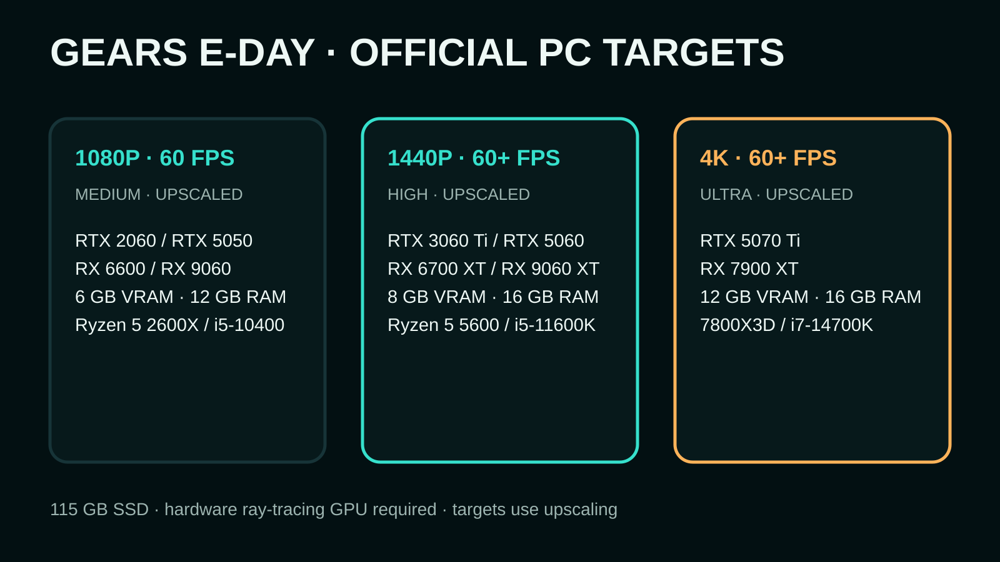
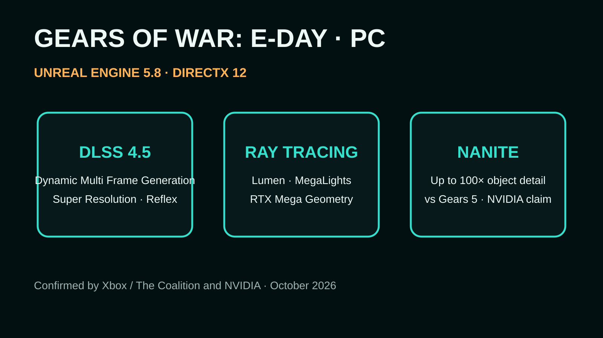

Emergence Day has started early. The Coalition confirms that Premium Edition players can begin Gears of War: E-Day on October 1 at 8am Pacific / 15:00 UTC, five days before the October 6 worldwide launch. The game arrives on Xbox Series X|S, Xbox on PC and Steam; Game Pass Ultimate and PC Game Pass access begins with the full launch.
For PC players, though, this is more than another early-access countdown. E-Day is one of the clearest tests yet of what a large-budget Unreal Engine 5 game looks like when modern ray-tracing hardware is treated as the baseline rather than an optional enthusiast extra.
The ray-tracing GPU is not optional
The final PC requirements draw a hard line: a graphics card with dedicated hardware ray-tracing support is required. That leaves older GTX-era hardware outside the officially supported floor even if raw raster performance might otherwise have been adequate.

That last sentence matters. These are not native-resolution performance promises. The Coalition’s published targets explicitly account for DLSS, FSR, TSR or XeSS. The Ultra specification asks for 12 GB of VRAM, while recommended calls for 8 GB and minimum for 6 GB.
Why E-Day could become a serious PC graphics showcase
NVIDIA and Xbox say E-Day is built from the ground up with Unreal Engine 5.8 and DirectX 12 . Lumen handles ray-traced global illumination and ambient occlusion, while MegaLights is used for ray-traced shadows from as many as 100 light sources. Nanite drives dramatically denser geometry, and NVIDIA says its RTX Mega Geometry implementation enables accurate ray tracing of that Nanite geometry on GeForce RTX hardware.

DLSS 4.5 adds Super Resolution and Dynamic Multi Frame Generation on supported GeForce hardware, with Reflex aimed at reducing latency. The wider PC build is not NVIDIA-only: The Coalition has also confirmed AMD FSR, Intel XeSS and Unreal Engine TSR support.
The 2060 minimum tells us something important
An RTX 2060 is hardly a fast GPU in 2026. Yet it contains dedicated RT hardware. That makes E-Day’s minimum specification unusually revealing: the dividing line is not simply how much conventional rendering performance a card has, but whether it supports the rendering path the game was designed around.
This is the direction PC requirements have been threatening to take for years. Ray tracing began as a toggle you disabled for extra frames. Here, hardware capable of that class of rendering is part of the admission ticket.
There is still a big question: how well does it actually run?
Feature lists and target tables are not benchmarks. The 1080p, 1440p and 4K targets all use upscaling, and Dynamic Multi Frame Generation can make an FPS counter look dramatically higher without changing the underlying input-response rate in the same way native rendered frames do.
Independent testing will therefore matter, especially for the RTX 2060-class minimum and RTX 3060 Ti-class recommended tiers. Frame-time consistency, shader behaviour, image reconstruction quality and VRAM pressure will tell us more than a headline FPS number.
The Coalition does have one promising answer to a familiar UE-era complaint: E-Day supports Advanced Shader Delivery on compatible platforms, allowing precompiled shaders to be delivered with the game to reduce first-run shader compilation and stutter.
STATIC’s take: E-Day is interesting because its graphics technology is not merely bolted onto an old rendering baseline. The requirement for ray-tracing-capable hardware suggests The Coalition is designing around modern GPU features from the start. If the RTX 2060 really can hold its stated 1080p/60 target with acceptable reconstruction and frame times, that scalability may be more impressive than what a 5070 Ti can do at the top end.
What is confirmed — and what is not
Confirmed by Xbox/The Coalition: October 1 Premium Edition early access, October 6 worldwide launch, the published PC performance tiers, SSD requirement, hardware-RT GPU requirement and broad upscaler support. Xbox and NVIDIA also confirm Unreal Engine 5 / DirectX 12, DLSS 4.5, Lumen and related RTX features.
Not yet established by STATIC: real-world retail performance across those tiers. Until independent launch benchmarks are available, the official FPS figures should be read as developer targets rather than measured third-party results.
Primary sources: Xbox Wire, “Gears of War: E-Day Has Gone Gold, Pre-Install Begins September 29, Full PC Specifications Revealed” (17 Sep 2026); Xbox Wire, “How The Coalition and NVIDIA are Building Gears of War: E-Day for PC” (14 Jul 2026); NVIDIA GeForce launch technology and Game Ready coverage (Sep 2026).
← Back to STATIC · Modern Warfare 4 PC analysis →